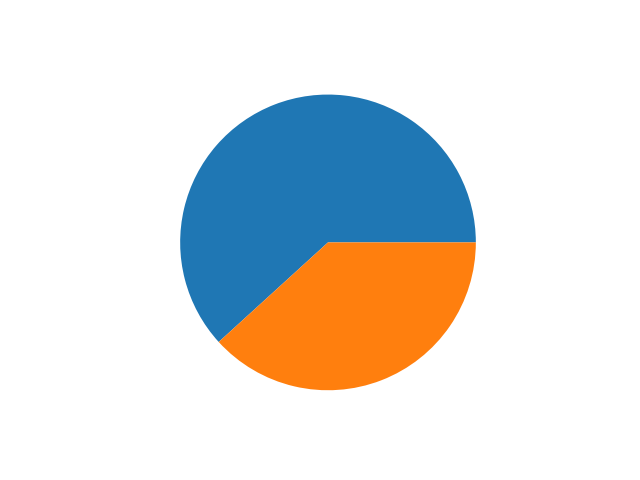
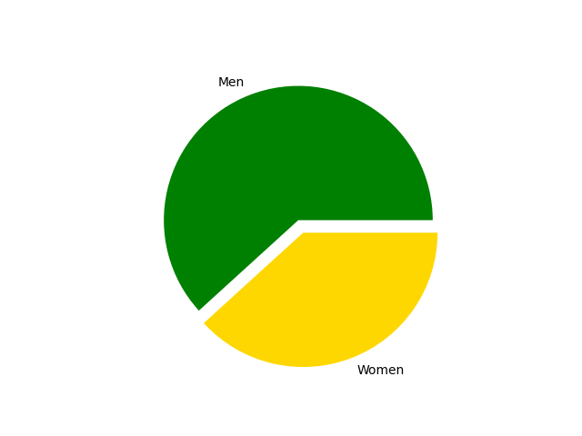

Total Domination
Canada's Absolute Domination of Ice Hockey
Every country has it's features that makes it special in it's own right. Whether it be the culture that the country has developed or the food that is exclusive to that area. Sometimes the famous people from that country like scientists, Noble Peace Prize winners and actors are key to what makes it stand out. One of the many things that makes Canada distinct from the other countries is the fact that we are, without a doubt the best in the sport of Ice Hockey. There is no competition to us. In every concieveable way we are the Kings to topple at the end of day.
To prove my point I went through the best possible data and analyzed it to prove beyond a doubt that we are the best.
First, I wanted to show how many medals Canada has won in total and how much of that is for Ice Hockey
Data Point 1
Our dedication to the sport
Of every sport Canada has won a medal in the Winter Olympics, Ice Hockey has had the most winners. But that is not all. Ice hockey has two categories. Men's Ice Hockey and Women's Ice Hockey. Women's Ice hockey only started at 1998 in the Nagano Games, Japan. During the first Women's Hockey match, USA got gold and Canada got silver. Matter of fact, if you look since the time women have started playing. There have been more women winning medals than men in the Ice Hockey event.
Data Point 2
Canadian Men vs Women (Ice Hockey)
There is always a constant feeling of brotherly competition every winter olympics when Canada is facing the US in Ice Hockey. It's met with thunderous applause and cheers from both sides. There has always been a health rivalry between the two countries in this sport. However, historically speaking. The US isnt even our biggest competetor. Not even the second biggest competetor.
That's right the US is fourth, behind a country that doesn't even exist anymore. If I added Russia's current medals with the USSR numbers our biggest competetor would in fact be the Russians. But they would still be under us in terms of number of medals.
If you'd like to see the charts and tables I used to make all this, click here.
If you'd like to see an article about Canada and the USA's Rivalry, click here.
I wanted to have the canadian anthem play in the background but I couldn't get it to work the way I wanted
 